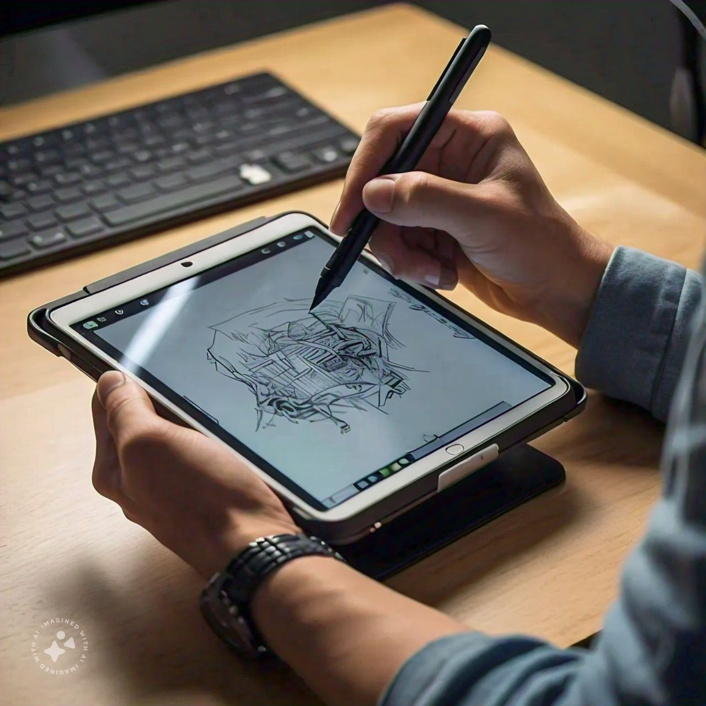
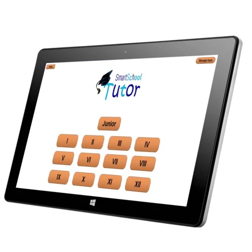

Learn about Tablets
3.1 How to Use a Tablet for Learning
Tablets offer a unique blend of functionality and convenience. Follow these steps to effectively use a tablet for educational purposes:
Step 1: Set Up Your Tablet for Learning
- Install Essential Apps: Make sure to download educational apps, e-book readers, and productivity tools like Google Drive or Microsoft OneNote.
- Organize Your Apps: Create folders for educational resources to easily navigate your apps.
- Sync Data: Use cloud services to sync your notes and documents across devices.

Tablet with Stylus: A tablet with a stylus being used for note-taking or drawing.
Step 2: Customize Your Learning Environment
- Adjust Display Settings: Optimize brightness and font size for comfortable reading.
- Use a Good Case: Invest in a sturdy case that allows you to set your tablet at an angle for easy viewing.
Tablet in a Study Environment: A person using a tablet at a study desk, perhaps with textbooks and notes around.
Step 3: Optimize Your Tablet for Learning
- Use Multi-Window Mode: If supported, use split-screen to view notes while watching educational videos.
- Manage Notifications: Silence distracting notifications while studying to maintain focus.
Step 4: Engage with Learning Platforms
- Use E-Learning Apps: Download apps from platforms like Coursera or Khan Academy for on-the-go learning.
- Participate in Virtual Classes: Use Zoom or Google Meet for online classes, making sure your tablet has a good microphone and camera.

Educational App on Tablet: A close-up of a tablet displaying an interactive educational app or e-book.
3.2 Key Features
- Portability: Tablets are lightweight and easy to carry, making them ideal for studying anywhere.
- Touchscreen Interface: The intuitive touch interface allows for easy navigation and interaction.
- Battery Life: Tablets often have longer battery life than laptops, allowing for extended study sessions.
3.3 Educational Uses
- E-Books and PDFs: Use your tablet to read textbooks, PDFs, and articles on-the-go.
- Note Taking: Apps like Notability or Evernote allow for organized and easy note-taking.
- Online Research: Use browsers to access research materials and online libraries.
- Multimedia Learning: Watch videos or listen to podcasts related to your studies directly on your tablet.
3.4 Tips for Effective Use
- Keep Your Tablet Updated: Regularly update your operating system and apps for better performance and security.
- Utilize Stylus for Note Taking: If your tablet supports it, use a stylus for a more natural writing experience.
- Backup Regularly: Make sure your important notes and files are backed up to avoid data loss.
3.5 Advanced Tips
- Connect to External Devices: Use Bluetooth keyboards for more efficient typing when needed.
- Explore Advanced Apps: Look for apps that enhance your learning experience, such as digital flashcards or language learning apps.
- Set Study Reminders: Use your tablet's calendar or reminder apps to schedule study sessions and assignments.
Explore Courses for Tablet